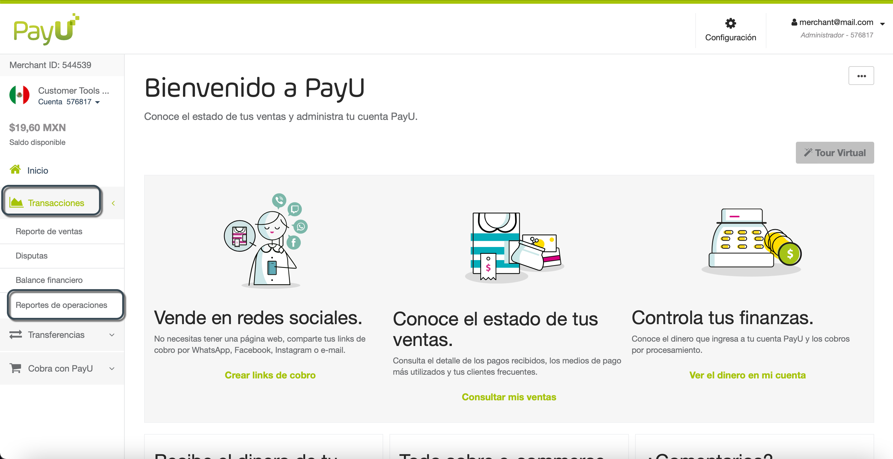
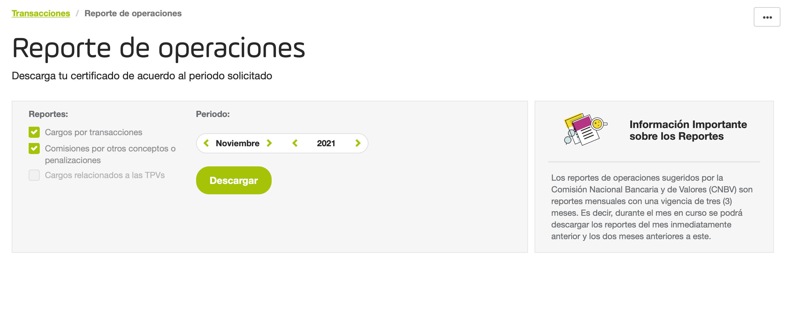

Reporte de operaciones
Los reportes de operaciones sugeridos por la Comisión Nacional Bancaria y de Valores (CNBV) son reportes mensuales con una vigencia de tres (3) meses. Es decir, durante el mes en curso se podrá descargar los reportes del mes inmediatamente anterior y los dos meses anteriores a este.
Nota
Para tener acceso a este módulo, necesitas un perfil con el permiso Operation reports > Consult operation reports activado.
Consulta Perfiles y Permisos para más información.
Descargar los reportes
Ingresa a tu cuenta PayU. En el menú de la izquierda, expande el menú Transacciones y selecciona Reporte de operaciones.

Selecciona el mes de las operaciones y los tipos de reportes que deseas generar y luego, haz clic en Descargar.
Como se mencionó anteriormente, solo puedes generar reportes para los tres meses anteriores.

Tan pronto como se generan los reportes seleccionados, se descarga automáticamente una carpeta comprimida con los reportes en formato .xlsx.
Las siguientes secciones explican los reportes que puedes generar junto con sus columnas.
Note
Si no tienes transacciones en el mes seleccionado, los reportes descargados corresponden a una plantilla estándar con valores en cero.Cargos por transacciones
Este reporte se puede generar para un mes determinado y tiene los siguientes campos:
| Campo | Descripción | |
|---|---|---|
| A | Monto Facturado Total | Valor total en pesos (MXN) de las transacciones del mes. |
| B | Número de pagos debidamente autorizados | Número de pagos autorizados del mes. |
| C | Tasa de descuento (%) | La comisión que cobra el banco adquirente a los comercios por instalar Puntos de Venta (TPV) y brindar el acceso a la red que permite la aceptación de pagos con tarjetas bancarias. Comisión de tramitación fija y/o variable. |
| D | Monto cargado por tasa de descuento | El valor resultante en pesos (MXN) después de aplicar el porcentaje de la Tasa de descuento. Es decir, Columna A × Columna C. |
| E | Cuotas por otros conceptos o penalizaciones | Cargos adicionales además de la Tasa de descuento. |
| F | Monto total por servicios de recepción de pagos con tarjeta | El resultado de sumar la Columna D y la Columna E, si aplica. |
Comisiones por otros conceptos o penalizaciones
Este es un reporte detallado de la Columna C (Cuotas por otros conceptos o penalizaciones) en el Reporte de Cargos por transacciones. Este reporte se puede generar para un mes determinado e incluye todos los conceptos del mes y la suma de cada uno.
Cargos relacionados a las TPVs
Para descargar este reporte, desmarca las casillas Cargos por transacciones y Comisiones por otros conceptos o penalizaciones. Este reporte se puede generar para un mes determinado y tiene los siguientes campos:
| Campo | Descripción | |
|---|---|---|
| Uso de las terminales punto de venta | Importe en pesos (MXN) cobrado al cliente por el uso del Terminal Punto de Venta (TPV). | |
| Mantenimiento de las terminales punto de venta * | Importe cobrado al cliente por el mantenimiento del Terminal Punto de Venta (TPV). | |
| Uso de aplicaciones tecnológicas de recepción de Pagos con Tarjeta * | Importe cobrado al cliente por usar la aplicación tecnológica. | |
| Cuotas por incumplimiento en facturación mínima / penalizaciones * | Importe que se cobra al cliente en caso de que incurra en algún incumplimiento o penalización por facturación mínima. | |
| Total cargos relacionados a terminales punto de venta | El resultado de la suma de todos los conceptos relacionados con el Terminal Punto de Venta (TPV). |
*Especifica la periodicidad: mensual, anual, etc.